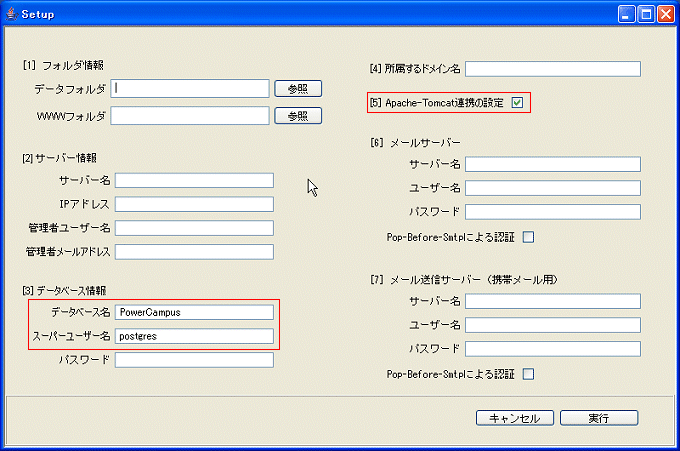
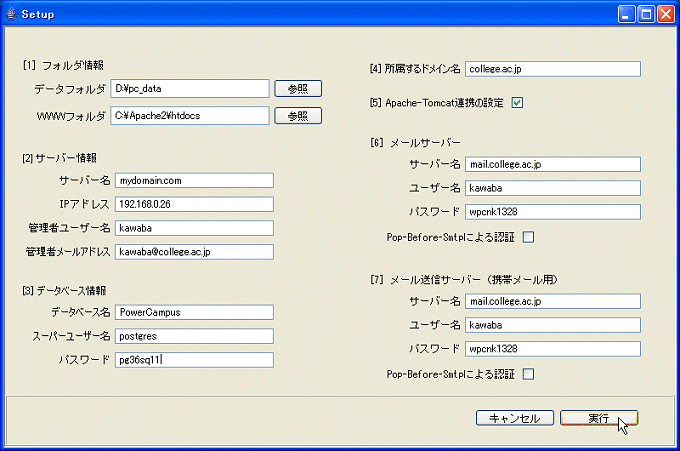
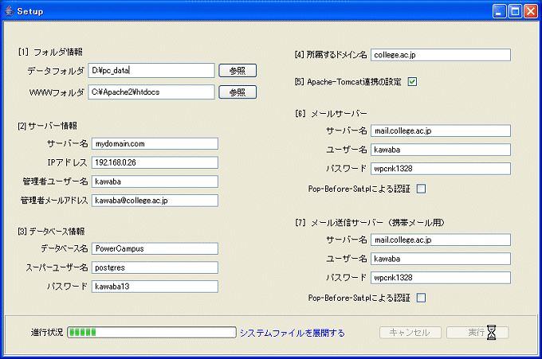
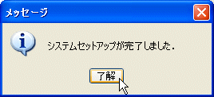

|
インストール情報の指定
インストーラは次のような画面を表示します．画面にインストール情報を入力しますが、赤枠で囲った部分はあらかじめ入力されています．Postgresalをインストールした際、例示の通りにインストールしていれば、この部分は書き換える必要はありません．以下では、記入項目を説明し、設定例を示します．

【データフォルダ】
学生が提出するレポートや課題ファイルなど、データベースに入れないで管理するデータを保存する領域です．ある程度の開き領域が必要です．最低でも１GB程度の空きのある場所を指定してください．
【WWWフォルダ】
apacheウェブサーバーがHTMLドキュメントを保管するルートディレクトリです．自分で変更しない限り、apacheをインストールしたディレクトリの htdocs フォルダになります．
【サーバー名とIPアドレス】
サーバーコンピュータの名前とIPアドレスです．大学内に設置したサーバーであれば、システム管理者から教えてもらってください.自宅に設置したサーバーの場合は、サーバー名には、ドメイン名を書き、IPアドレスは宅内の内部アドレス(プライベートアドレス)を書きます．内部アドレスなどの用語が不明な方は、「PowerCampus desktop に必要なコンピュータ環境」を参照してください．自宅サーバーの解説方法を説明した文書です．
【管理者ユーザー名】
サーバーコンピュータにおける管理者のユーザーIDです．そのサーバーコンピュータにログインするときに使っているユーザー名を記入します．
【メールアドレス】
管理者のメールアドレスです．システムからの通知が届くアドレスですから通常使っているものを指定してください．
【データベース名】
postgresql をインストールした時に付けたデータベース名です．
【スパーユーザー名とパスワード】
postgresql をインストールした時に付けたスーパーユーザー名とパスワードです．これを書き間違うとシステムがデータベースにアクセスできなくなります．
【所属するドメイン名】
これは、あなたの講義を受講する学生が所属するドメイン名です．つまり大学のドメイン名ですが、学生の所属によって違うことがありますので、不明ならばシステム管理者に聞いてください．ドメイン名は仮想LMS環境で、各LMSを識別するキーとして使われます．
【Apache-Tomcat連携の設定】
apacheウェブサーバーとtomcatが連携するように内部的な設定を行います．このチェックをはずすのは、特別なケースです．通常は必ずチェックしておいてください．
【メールサーバー】
サーバー名は、大学のメールサーバーの名前を書きます．不明な場合は大学のシステム管理者に問い合わせてください．ただし、自宅サーバーの場合で、自宅から学生あてにメールを送信するために、大学のメールサーバーが使えない時は、利用しているプロバイダでのメールアカウントを指定してかまいません．
【ユーザー名とパスワード】
ユーザー名とパスワードは、学生へのメール送信に利用されます．ご自分のメールアカウントで構いませんが、大学内に設置したサーバーの場合で、複数の教師で共有する時は、専用のアカウントを作成した方がいいでしょう．
【pop-before-smtpによる認証】
メール送信の認証に使われる一つの方式です．利用されることは少ないようですが、しかし、この方式を取るサーバーでは、ここにチェックをいれないとメール送信ができません．pop-before-smtpを使っているかどうか不明な場合はシステム管理者に問い合わせてください．
【携帯メール用の各設定】
上の一般メール(e-mail)用と同じ設定にしてください．自宅サーバーで、やむなくプロバイダーのメールアカウントを設定した場合、それをこの携帯メール用にも書いて構いません．ただし、プロバイダのアカウントでは、多数の学生に一括して携帯メールを送信することはがきません．携帯メールの大量一括送信は、プロバイダーで拒否されれしまいます．ただ、１通づつなら送信可能です．
(自宅サーバーで携帯へむけて大量一括送信を行いたい場合は、固定IPアドレスとDNSサーバーをもつ本物のメールサーバーを自前で立てるほかありません)
《設定例》

インストール実行
全て設定したら、実行をクリックします．およそ１分ほどで完了します．


|
|
 インストールの開始
インストールの開始
 使用許諾
使用許諾
 インストール先の指定
インストール先の指定
 インストーラーの実行
インストーラーの実行